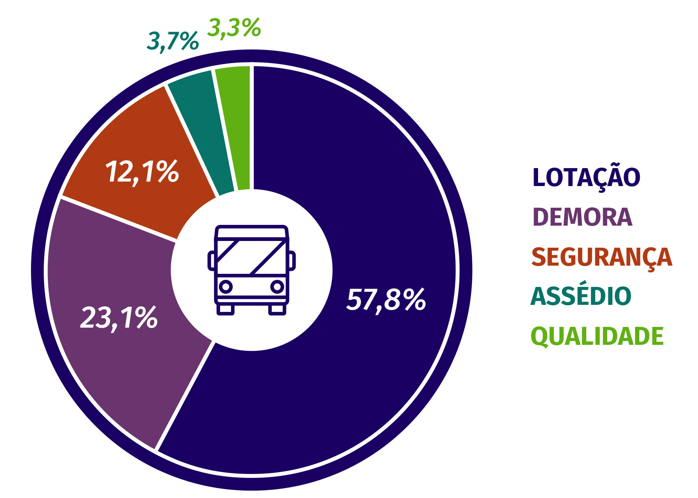

Problemática
Fonte: https://www.comunicaquemuda.com.br/dossie-mobilidade/o-transporte-publico/
No Brasil os principais problemas enfrentados por quem utiliza o transporte público são os atrasos, superlotação, risco de assédio e as condições ruins dos veículos
Segundo a NTU (Associação Nacional das Empresas de Transportes Urbanos), 28% dos usúarios de transportes coletivos fazem o uso desse diariamente, sendo ônibus responsável por 85,7% desse total.